Markdown tools for Omarchy.
A reader that sets a plain text file like a book, a writer for getting the words down, and the changes between two versions of a document, shown on the page you read. Native Wayland windows in the colours of your theme.
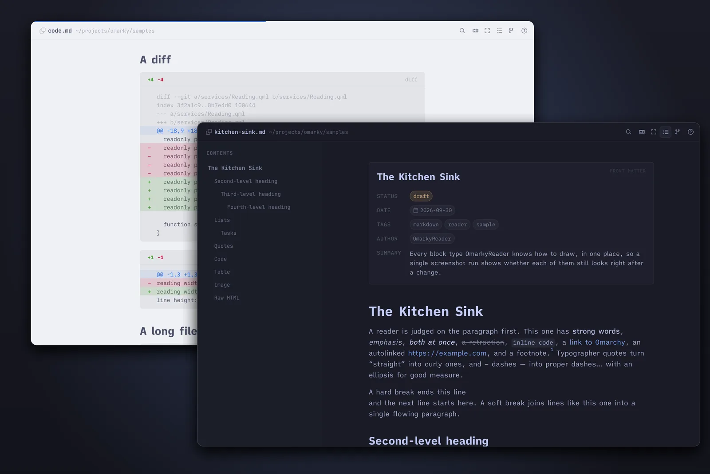
Principles
Most of what we read on a screen was poured into whatever container was to hand: a line as wide as the window, a blank line between paragraphs because the markup produced one, headings big because big meant important. A printed page had centuries of tuning before it reached its shape. Omarky applies the old fixes to a Markdown file, one decision at a time, and then leaves them alone.
The page
One centred column, about 68 characters wide, the measure of a well-set book. Line height and paragraph spacing give the text room. Bullets, numbers, heading marks and quote marks hang in the left margin, in both apps, so the text keeps one straight edge. Headings sit on a scale from the body size, with space above and little below, so each binds to the text it introduces.
The type
iA Writer Quattro S for prose and its Mono S for code. The mono is lighter than a programmer's font, so a code block sits beside a paragraph without shouting, and it has no ligatures, because the reader's job is to show exactly what the file says. Headings are the same family in bold.
The colours
The current Omarchy theme, read as you switch, light or dark. Code colours are generated from the theme's own colors.toml, so a code block matches the page around it. Neither app has a theme picker.
The chrome
A header with the file's name, an outline that follows you through the document, and the page. In the writer the header and the word count step aside while you type and come back when you move the mouse. Keys do the rest, and ? lists them.
The file
The Markdown file on disk is the document. The reader reloads in place when another program changes the file, keeping your paragraph. The writer saves the text exactly as you typed it, and its marks are painted, not rewritten. The file is the only format.
Versions
When a document lives in git, its history is "Danny, Friday 23 October" and "me, yesterday", and the reader shows what changed between two of them on the page you read.
OmarkyReader
Open a file and it is a page: one column, the outline at the left, and the first paragraph where your eye lands. Headings, lists, quotes, tables, code, images, footnotes, task lists and alerts are each given their own setting. The outline marks the section you are in and jumps on a click.
omarky read notes/plan.md
omarky read docs/spec.md#window-and-behaviour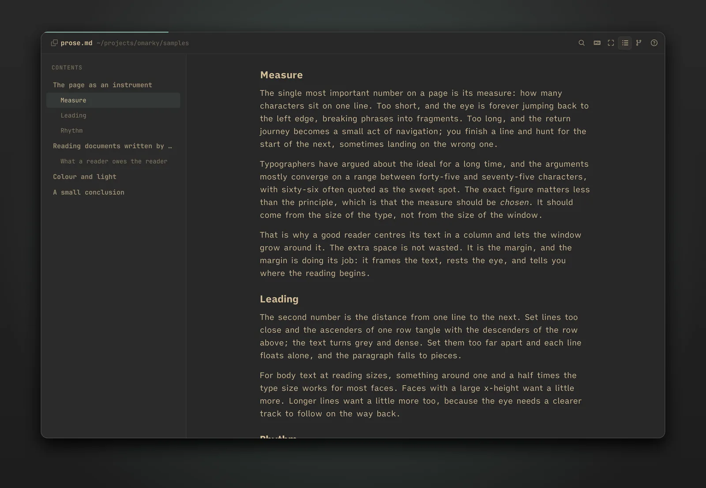
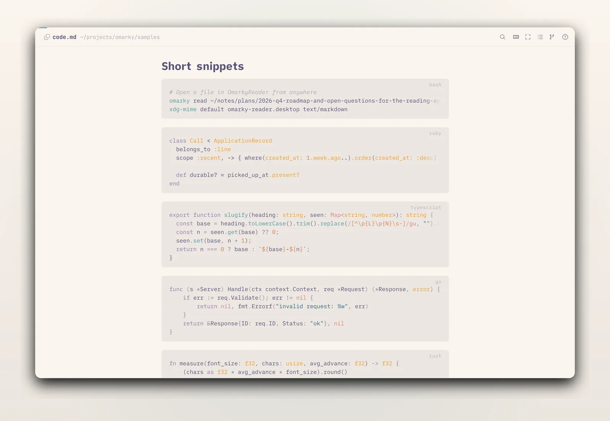
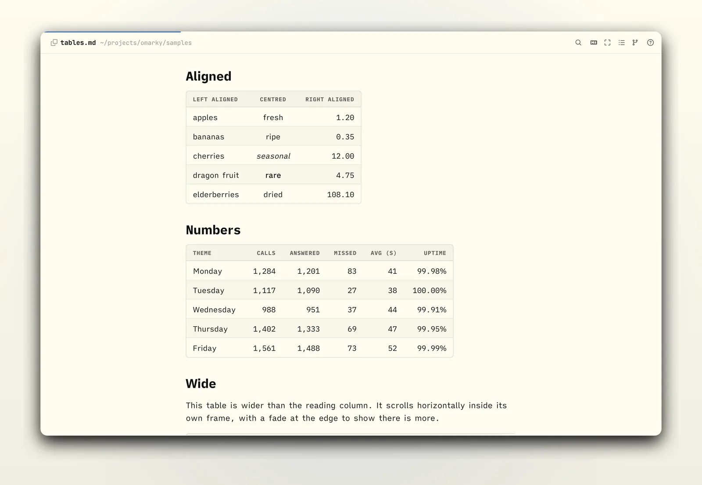
Find (Ctrl+F or /) steps through matches across the whole document. Links to other Markdown files open in a new window at their heading, and web links open in your browser. Right-click any block to copy its Markdown source. The file is watched, so an edit in another program shows up in place, with the page kept on the same paragraph.
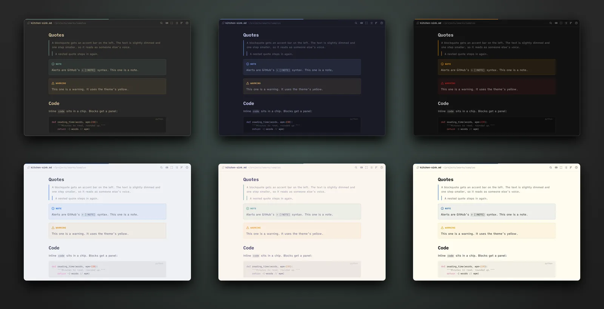
Changes between versions
When the file has check-ins in git, a branching chip joins the header. Pick a version and the window compares the file as it is now with that version: added words on a wash in the theme's green, removed words faded under a strike in its red, a tag in the margin for each paragraph that changed.
omarky read proposal.md --from danny
omarky read proposal.md --from yesterday --to "danny fri"
omarky changes proposal.md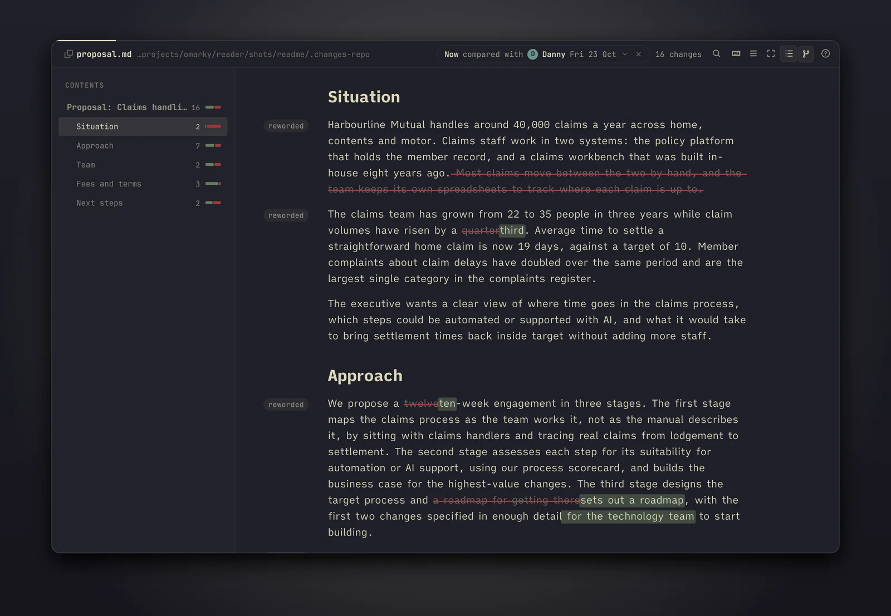
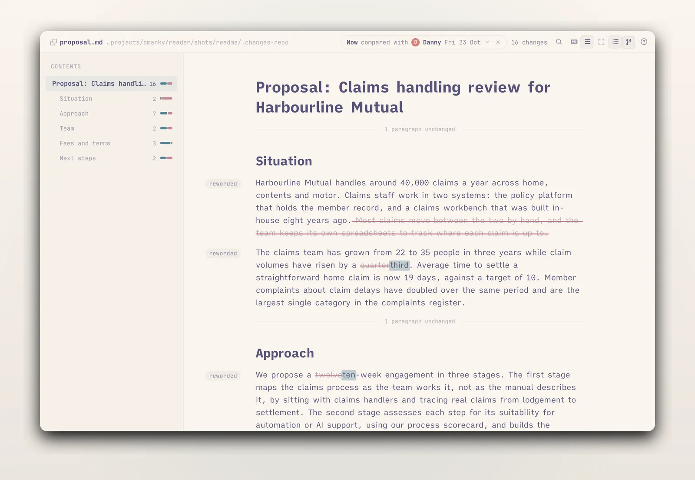
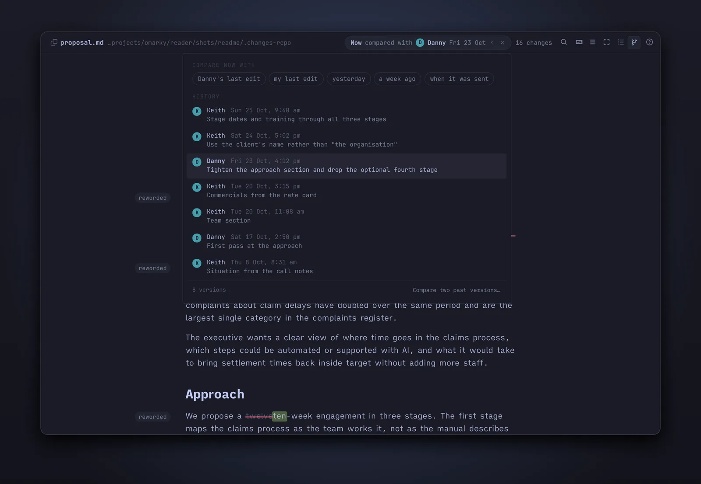
danny, me, yesterday, a week ago, fri, 23 oct, sent, before danny.Editing a block
Reading, you find a sentence to fix. Press E and the block under the mouse opens in a sheet over the page, in OmarkyWriter's editor, with the blocks before and after it faint around it. Shift+E opens the whole section. Type, then Ctrl+Enter: the file is written and the page reloads under the sheet. Esc closes without writing. The sheet refuses to write over a change that landed while it was open, and in changes mode a reworded block offers its older wording with one chip.
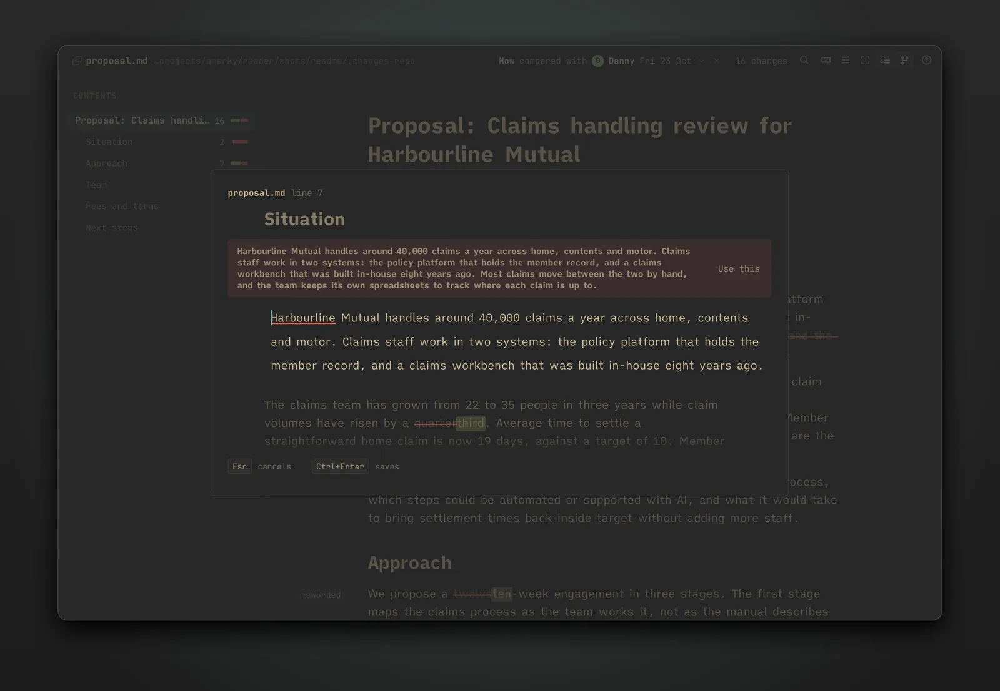
The sheet is for the sentence you noticed while reading, or the section that needs another pass. When the morning is for writing, open the file in OmarkyWriter.
OmarkyWriter
The window holds the text and little else. You type plain Markdown and it looks finished as you write: emphasis leans, code sits in a chip, links read as links, and the marks that make it happen fade back once they have done their work. Heading marks, list markers and quote marks hang in the left margin, so the text keeps the same straight edge as the reader's page. The text in the window is always exactly the file's Markdown.
omarky write notes/essay.md
omarky write
omarky write --end journal.md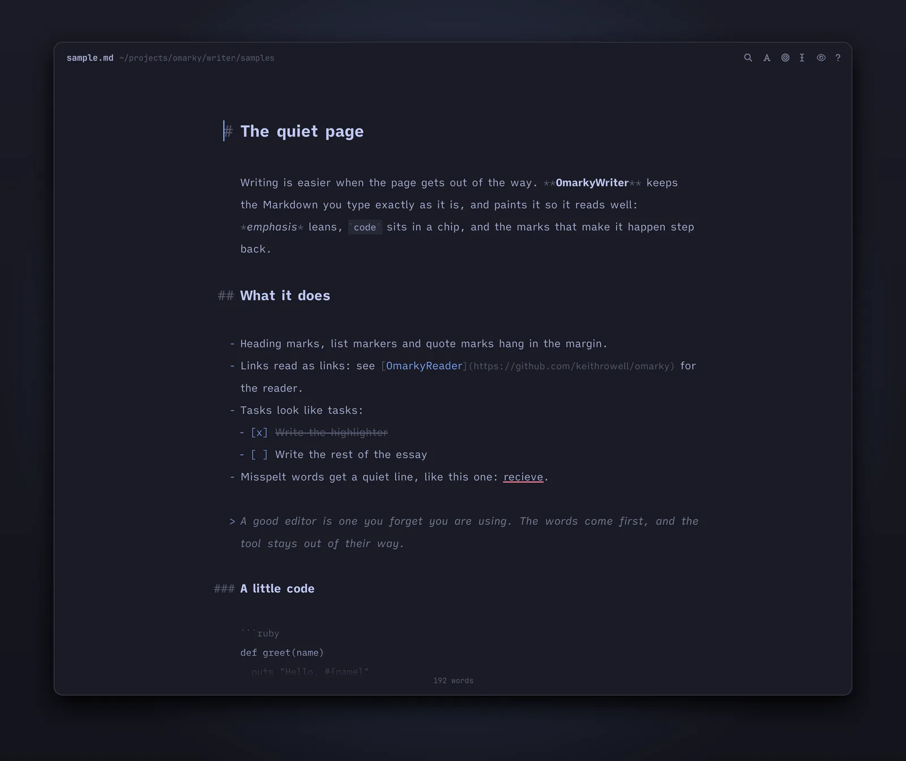
| Enter | Continues a list, a numbered list (counting up), a task list or a quote. On an empty item, ends the list. |
| Tab Shift+Tab | Indents or outdents a list item. |
| Ctrl+B Ctrl+I Ctrl+E | Bold, italic, inline code. Again to remove. |
| Ctrl+K | A link around the selection, cursor in the URL. |
| Ctrl+1 to Ctrl+6, Ctrl+0 | Heading level, or back to a paragraph. |
Focus (Ctrl+Shift+F) fades every paragraph but the one you are in. Typewriter scrolling (Ctrl+Shift+T) keeps the line you are writing in the middle of the window. The header and the word count step aside while you type. Misspelt words get a quiet line once you have moved past them, so nothing flickers under the word you are still typing, and a right-click offers suggestions.
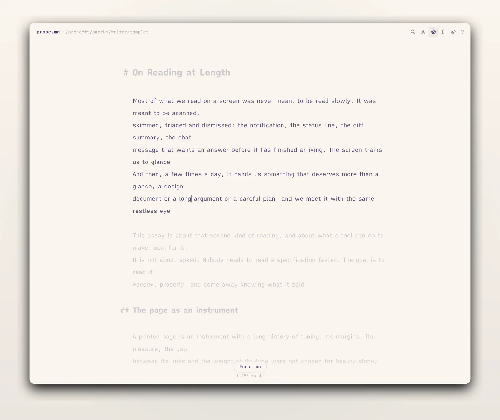
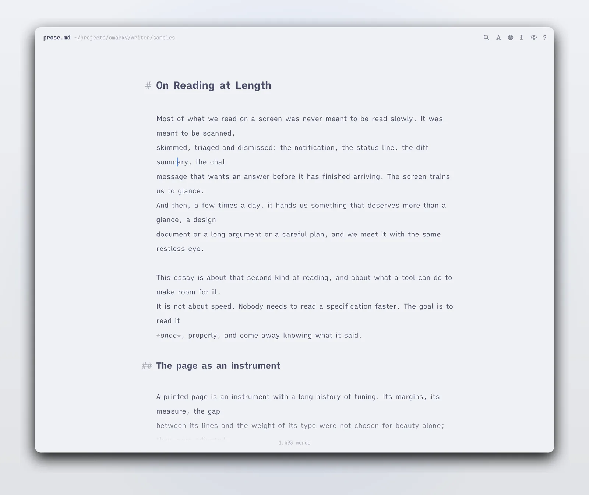
Reading back
When you want to read what you have written, Ctrl+P shows the document as the reader sets it, opened at the paragraph you were in, and Esc puts you back at the same place in the source. The two apps share one renderer, so the page you read back is the page the reader will show.
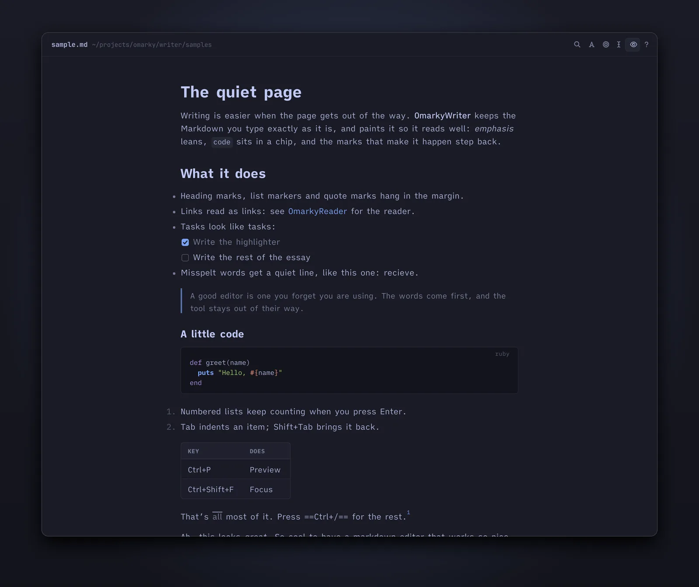
With no file you get a new untitled document, saved as a draft while you type. Ctrl+R lists recent files and drafts, and Ctrl+Shift+S gives a draft a name. Named files save themselves a moment after you stop typing. A file changed by another program is reloaded in place when you have nothing unsaved, and offered as a choice when you do.
Architecture
QML on Quickshell
Both apps are built with the toolkit Omarchy's own shell uses, so they are native Wayland windows without a web view. The parser is markdown-it, and the blocks are rendered as a flat list, one delegate per block, which is what keeps a long document scrolling smoothly.
One library
The renderer, the diff engine, the editor and the chrome live in one library at the root of the repository. Each app is a shell, a window and a command line on top of it. That is how the reader can borrow the writer's editor for one block, and how the writer's preview is the reader's page.
The native module
The writer's live Markdown is painted by a small C++ syntax highlighter on the text document, which also sets line height and the hanging marks. It is built on first run when cmake and the Qt headers are there, and the editor runs plain without it.
Git behind the launcher
The window leaves git to the Ruby command line, which resolves "danny fri" to a version and hands the window two texts and two labels. The diff engine aligns the documents by section and paragraph, then by word, and marks the newer document's runs.
Every design choice is written down in docs/decisions, one numbered record each, from why blocks are a flat list to why layout stays outside the undo history.
Install
With quickshell, ruby, ttf-ia-writer, sonnet and hunspell-en_au installed, and cmake with the Qt 6 headers if you want the writer's native module:
git clone https://github.com/keithrowell/omarky.git ~/.local/src/omarky
~/.local/src/omarky/ops/installThe script links omarky into ~/.local/bin, adds a desktop entry and an icon for each app, and builds the native module when it can. It leaves your default Markdown app alone. To make the reader the default:
xdg-mime default omarky-reader.desktop text/markdownTo update, pull and run the install script again. Press ? in the reader or Ctrl+/ in the writer for every key.